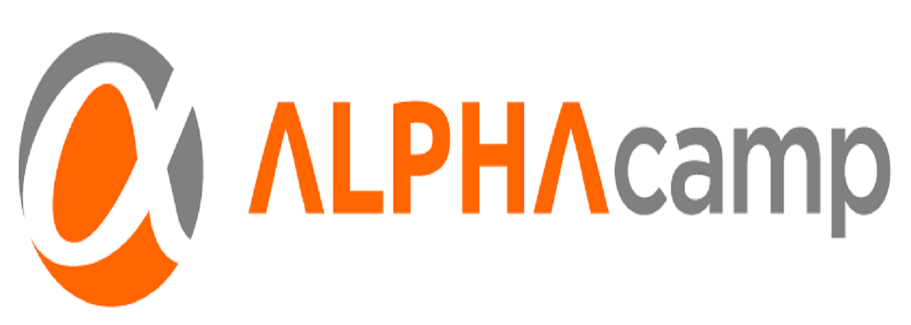

我 想 加 入 ALPHA Camp

我想加入ALPHA Camp，而且我認為我有能力擔任行銷助理一職
對於「創業」，我了解常常被人誤認為是一種光環的存在，但其實背後有許多艱苦的道路所在。但正因為這條不平整的路，讓我更想一探究竟且有投入的慾望，我想深入去瞭解公司正在成長、執行的歷程中，AppWorks與各創業者之間是如何互動並跨出精準的下一步。我在校園中也曾與其他夥伴組織校內團購的服務，並嘗試著從中學習創業的概念，在實務中去理解。正因為從中摸索到許多有趣之處，也因此讓我更期待在未來能有投入創業的可能。也曾有機緣與AppWorkout (AppWorks第8梯團隊)成員Vincent等人認識，因此曾至AppWorks辦公地點，在看見許多團隊與成員共同在AppWorks中求新求變，不斷砥礪團隊實力的畫面，讓我想在這裡努力學習。且在過去擔任專欄作家、舉辦活動等等經驗後，網路的發展與變化性仍深深吸引我，更渴求在AppWorks中一一學習並挖掘出產業知識、精實創業究竟是如何有效地執行，以及AppWorks所扮演的角色，因此非常期盼能參與擔任實習生一職。
我渴望能加入AppWorks，希望透過以往在活動上的經驗來協助，或許活動類型及流程更加複雜與精細，但我相信可以從中學習並協助大小型活動之進行。
而平日除了在校內修習商學課程中外，我也相當熱愛追蹤各類科技、網路、創業、Maker等等之最新新聞。追蹤這些消息已經形成我的例行工作， TechCrunch、The Verge、36氪都會隨機瀏覽，此外自己也相當喜歡ProductHunt、Sidebar這些每天更新 的工具或startup資訊。我認為這些內容都相當有趣且實用，有助於拓展對產業的視野。所以我相信最新資訊的蒐集我從來不會落後於其他人，未來在AppWorks也期待能將平常所累積的知識、概念投入其中。
也因為對網路、創業議題的熱忱，自今年開始自學HTML , CSS , JavaScript等語言，而個人官網即是透過這些工具自行建立的，也從中挖掘出自己的一份興趣。 且透過codecademy等教學網站、以及各種網路上的資訊自己主動學習。雖然我自己並非就讀資訊相關科系，但深信未來會有越來越多的工具需要透過各類電腦程式來運作。
我們在校園中的學習，每周必須有固定的個案討論、報告，因此對於表達及團隊合作我我有足夠的能力。 但這部分任何時候都有能再加強的空間，因此若有幸進入AppWorks，我必定會努力學習並作到最好。 而團隊合作則是基本的態度，也相當享受能與其他成員一起共事達成目標。
過去也曾與夥伴嘗試在團購或是其他商業行為中找出新玩意，我相信在創業過程中其實仍有許多新奇之處，且總是有許多創新的點子與思考在網路或創業道路中被激盪出來。而我對於自己的生活態度，都是以好奇作為起點，對於新事物都想探索其中。我希望能加入AppWorks，打破自己的界限與固有的思考，並且在實習過程中努力學習，為AppWorks提供助力。
最後感謝您願意撥空瀏覽我的履歷，我相當渴望能獲得這次的實習機會，期待未來能進入AppWorks擔任實習生。也再次謝謝您，期待您的回覆。